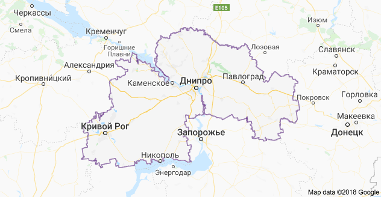

Днепропетровская область находится в центре Украины.
Характеризуется выгодным географическим положением,
богатыми природными ресурсами, мощным промышленным
и научным
потенциалом, развитым сельскохозяйственным производством,
высоким
уровнем развития транспорта и связи. В состав входят 20 городов.